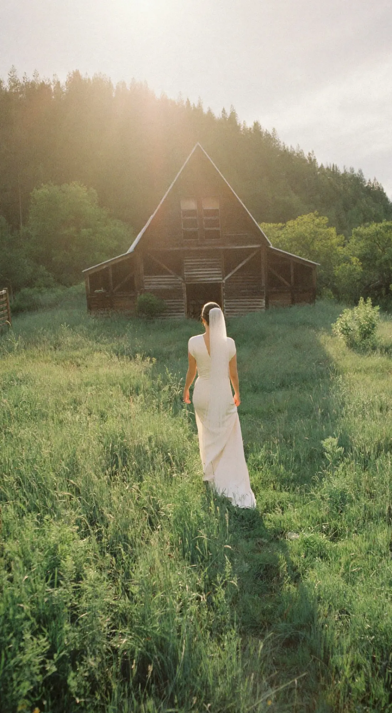
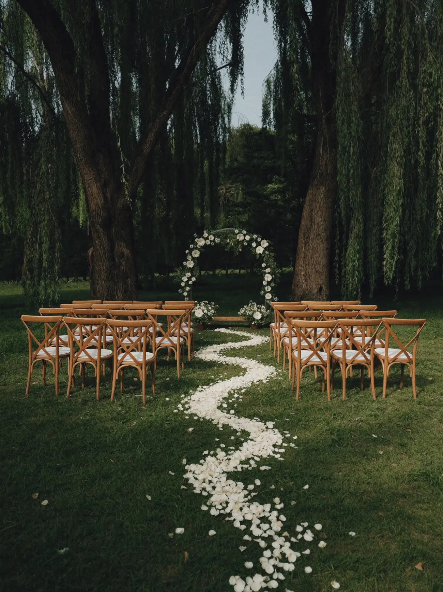
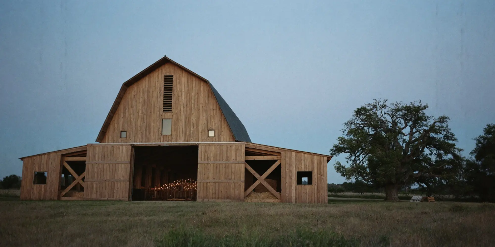
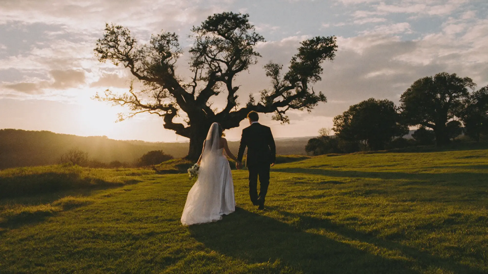
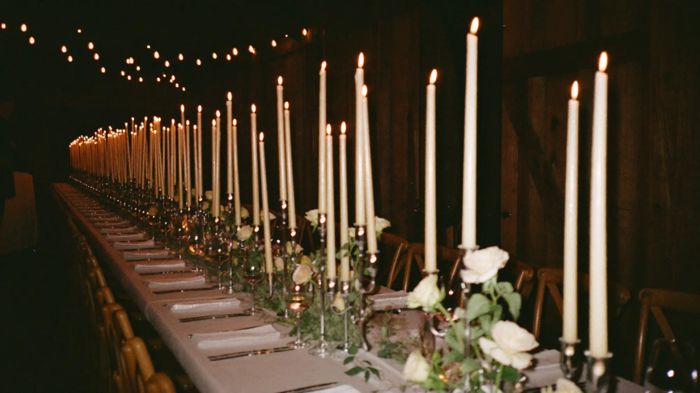

Exclusive use wedding barn
Where itall begins.
A restored oak barn, a meadow and an ancient tree. One wedding a day, and the whole place is yours.
No other weddings next door. No rush to clear the room. Just your people, one long table, and a barn that has been waiting three hundred years for the party.

Say yes under the oak
Outdoor ceremonies beneath the old oak, with the barn as your wet weather plan just a few steps away.

Dine by candlelight
Long oak tables for up to 150 guests under original beams, lit by hundreds of candles.

Golden hour, all yours
Twenty acres of meadow for photographs as the sun drops behind the trees.
What we do
Everything for the day.
- 01Exclusive useThe barn, meadow and grounds are yours from morning until midnight, with only one wedding a day.
- 02CeremoniesLicensed ceremonies under the oak or inside the barn, with seating, arch and sound set up for you.
- 03Wedding breakfastSeasonal menus from our partner caterers, served at long oak tables under the beams.
- 04Evening partyDance floor, festoon lit courtyard and a late bar until midnight.
- 05Planning teamA dedicated coordinator from first viewing to last dance.
- 06Stay overBridal suite and cottages on site for the couple and close family.
The venue
Every corner, golden.

How it works
From first visit to first dance.
Come and walk the barn, meadow and grounds with our coordinator, any day of the week.
We hold your chosen date for fourteen days while you decide.
Menu tasting, layout planning and a final walkthrough with your suppliers.
Our team runs the day so you and your guests never have to think about it.
Book a viewing